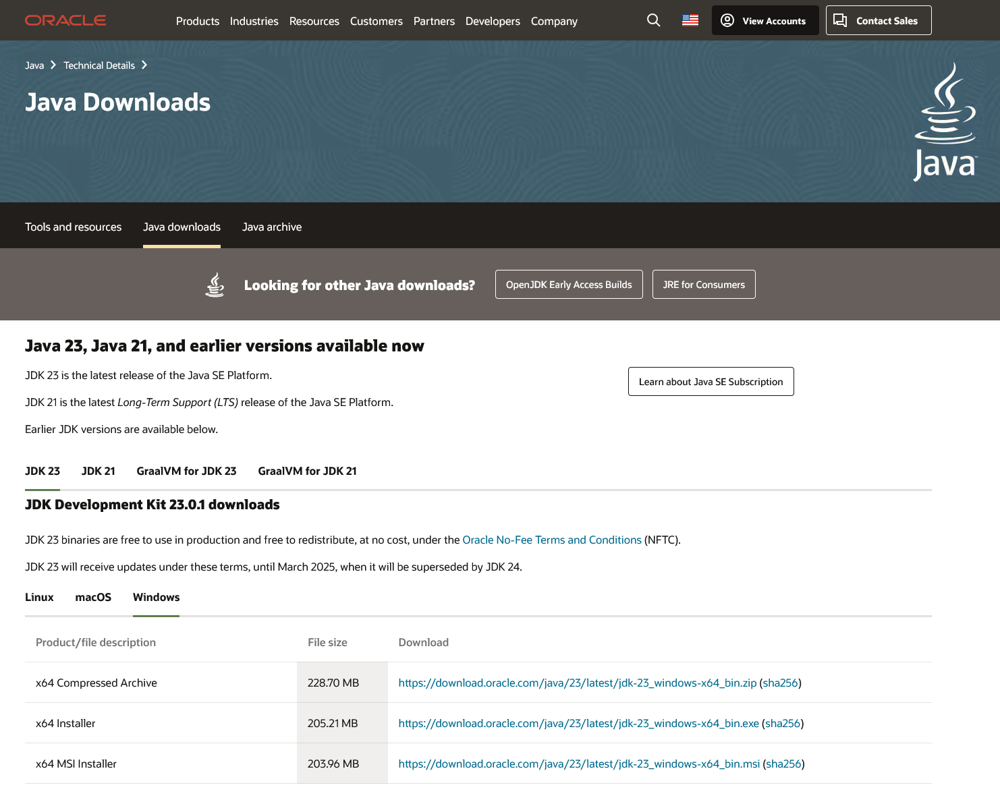
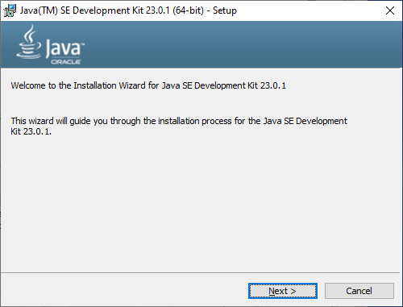
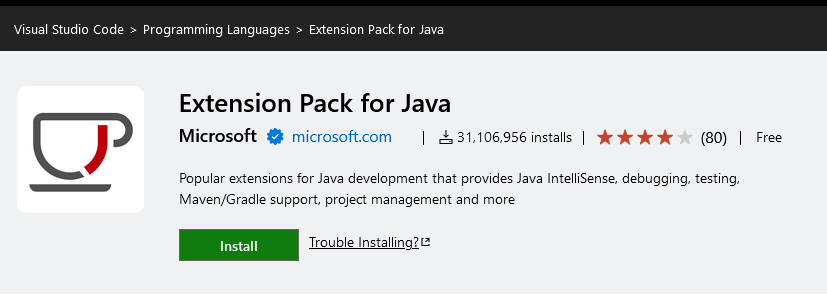
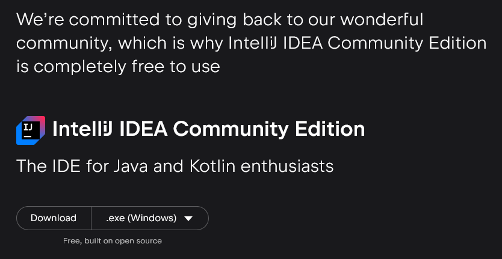
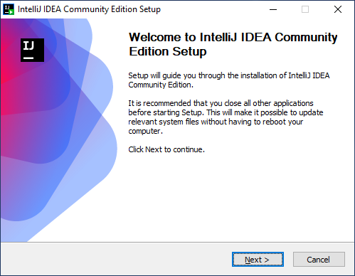
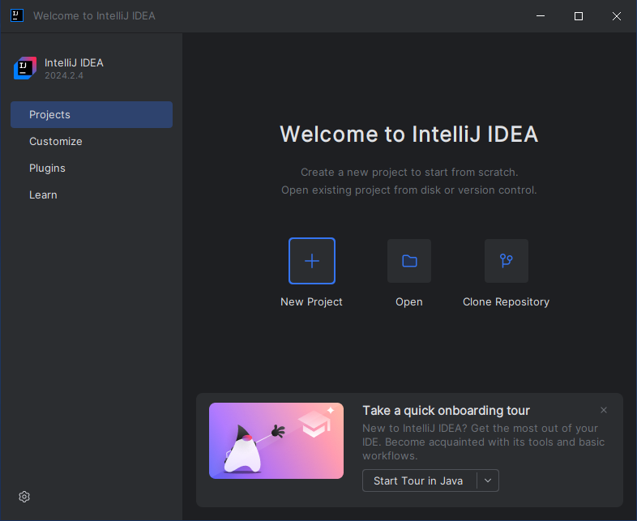
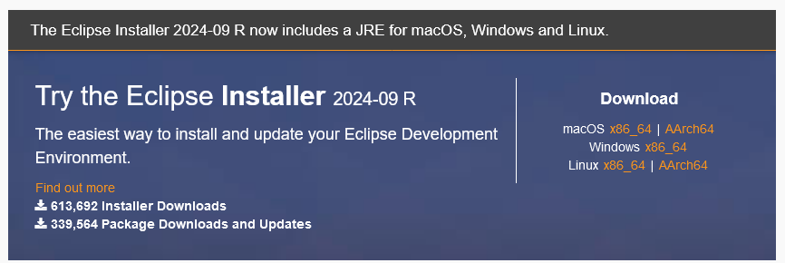
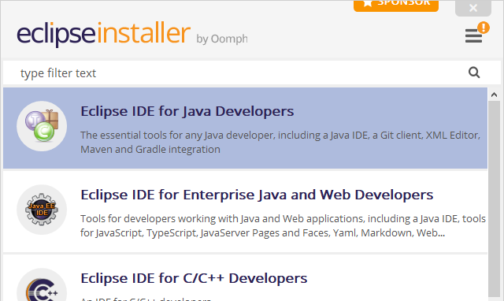
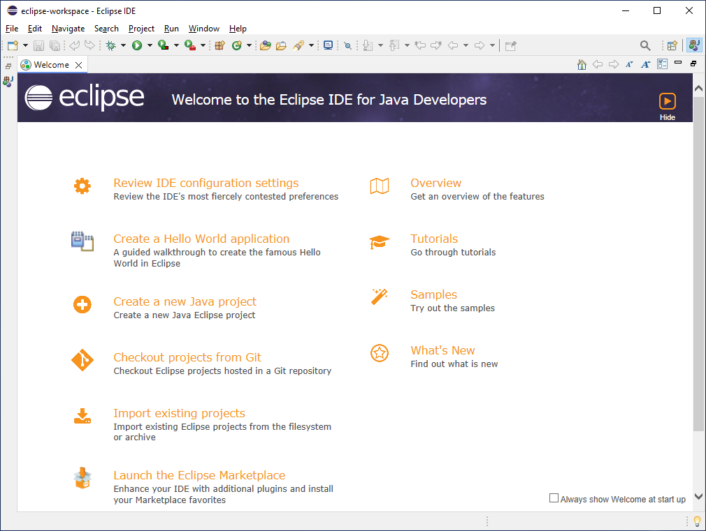

Setting Up a Local Development Environment
CIS-117, Java Programming I, teaches students the basics the programming language Java, using the zyBooks learning platform. With zyBooks, there's no requirement to install any software on your computer — all of your course material is provided and executed with your web browser.
Sometimes, however, you may run into an issue in zyBooks where your code looks like it should work, but either it doesn't, or the zyBooks autograder reports invalid results when testing your code. For this reason, it's useful to install a Java code editor locally (on your computer), which allows you to run your code outside of zyBooks. This also allows you to experiment, if you wish to try alternate methods of completing an assignment (or just wanted to try something new!).
Compiling (the process of converting the code which you wrote into something a computer can execute) Java code requires installing the Java Development Kit (JDK). You can install the JDK by visiting https://www.oracle.com/java/technologies/downloads/.

Once the download is complete, launch the installer:

Once the JDK has finished installing, you'll want to install a code editor. Here are a few options which we recommend:
Visual Studio Code
Visual Studio Code, also known as VSCode, (not to be confused with the Visual Studio IDE) is a simplified, multi-language code editor from Microsoft, available for free at https://code.visualstudio.com/. No license is needed to download and install VSCode. It does not have Java code support out of the box, but the free extension Extension Pack for Java is available from Microsoft which will add all of the tools needed: https://marketplace.visualstudio.com/items?itemName=vscjava.vscode-java-pack

IntelliJ
IntelliJ IDEA is an IDE (integrated development environment) from JetBrains, available for download at https://www.jetbrains.com/idea/.
IntelliJ IDEA is a commercial software application, but JetBrains offers free licenses to student and educators, as well as a free Community Edition. You can acquire a student license by visiting https://www.jetbrains.com/community/education/#students and clicking the Apply now button. You'll use your student email address (yourname@email.grcc.edu) to create an account, and once you've verified your email address you'll have access to IntelliJ IDEA (and other IDEs) as long as you remain a student. If you prefer to use the Community Edition, visit the main IDEA page above and click Download. Scroll down to the Community Edition section and click Download again:

Launch the installer, and then click Next. The default options are safe to use, so click Next a few times, and then Install.

Once the installer completes, click the Run IntelliJ IDEA Community Edition checkbox and then click Finish. IntelliJ will load into the Welcome page and is ready to use.

Eclipse IDE
Eclipse is a free and open source IDE managed by the Eclipse Foundation. No license is needed to download and install Eclipse. You can download Eclipse by visiting https://eclipseide.org/ and clicking the Download button:

Launch the installer, and then select Eclipse IDE for Java Developers. The default options are safe to use, so click INSTALL.

Once the installer completes, click LAUNCH, and then Launch on the initial Eclipse window. Eclipse will load into the Welcome page and is ready to use.
